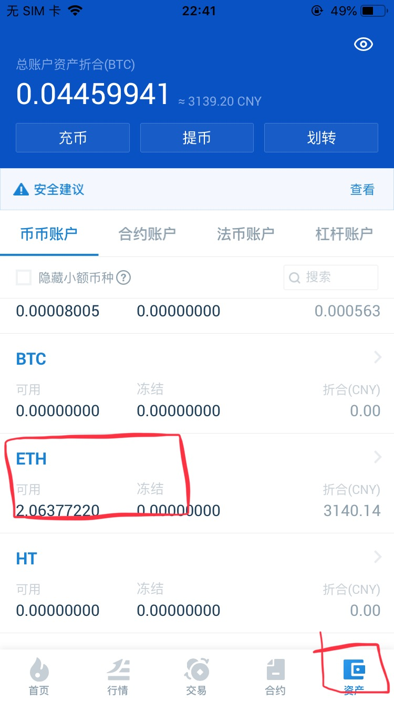
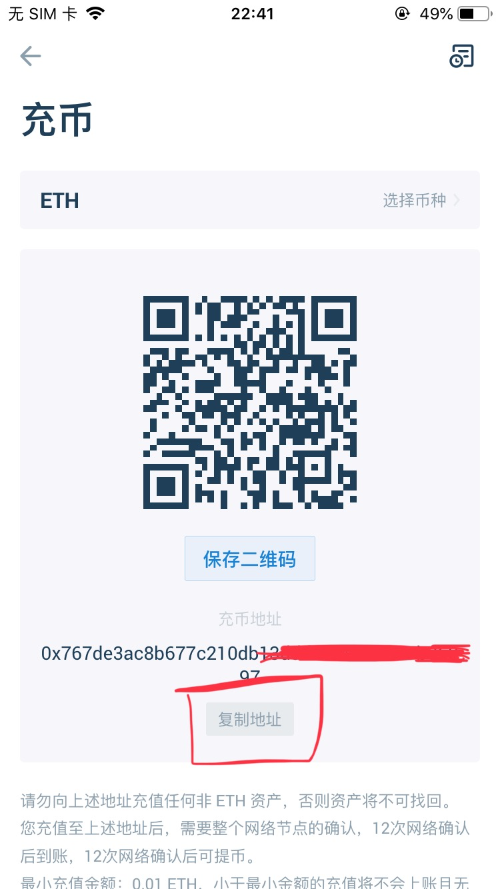
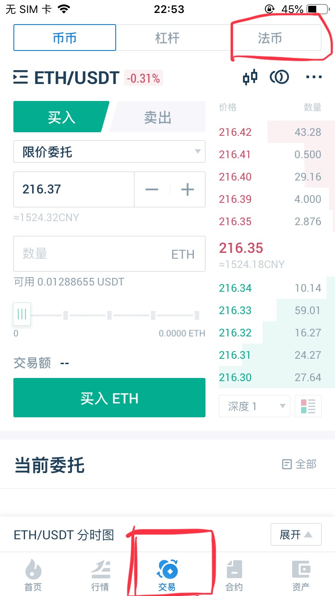
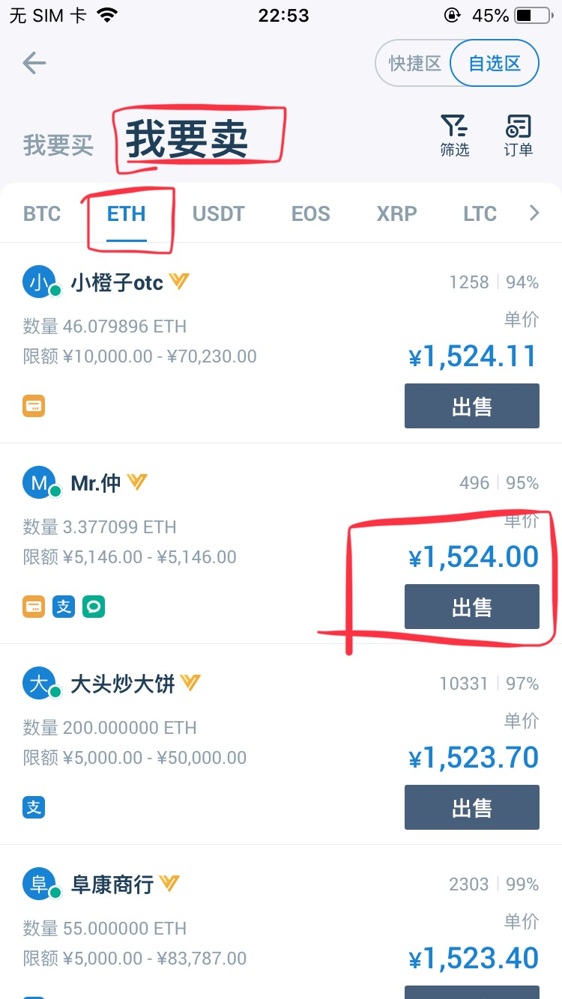
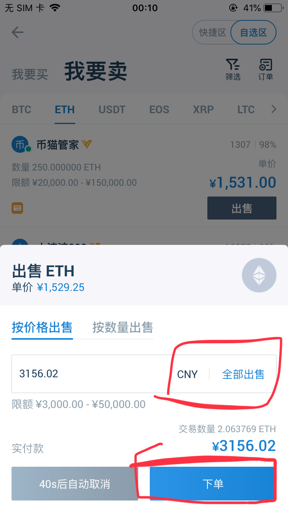

一、可以直接支付宝提现的时候直接绑定支付宝提现（基本上秒到，一般2小时内必到账）。
二、规定只能提现到数字货币ETH的时候，可以用火币或imToken数字钱包，此处以火币为例进行讲解。
1.下载火币APP并注册用户（安卓版直接搜，苹果版请用国外或港台地区的Apple ID）。
火币APPLOGO如下：
2.登陆后在点击底部最后一个按钮“资产”，然后点击“ETH”：

3.点击后进入ETH地址页面，复制地址：

4.在樱花瓣“设置->设置ETH收款地址”处保存此地址，然后就可以正常提现至ETH了。
5.进入火币APP，“交易->法币”，根据提示转为法币。

6.转为法币后，可以在"自选区 -> ETH -> 我要卖"，选择合适的价格出售即可。

